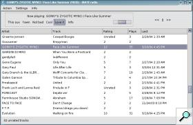
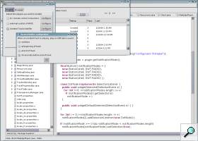

What is iRATE Radio ?
Overview
Usually, when it comes to music online, one has to chose between free music or legal music. What if someone were to provide music that is both free AND legal? Many artists, in hope of getting their music to a broader audience, put samples of their music on their web site where people can download them. The problem is then to find the music amongst the wide range of styles available on the web.
{kind=link}
iRATE Radio is an open source project dedicated to facilitate music discovery. iRATE initially downloads a few songs off of artists' web sites. The user then rates the tracks on a scale of 0 to 10. Using those ratings as well as those of other people, iRATE is able to figure what kind of music you like and provide you with more music of the same style.
I first heard about iRATE Radio through one of Michael Crawford's Kuro5hin articles, "Links to Tens of Thousands of Legal Music Downloads". After using it for a few weeks, I posted a few suggestions on the iRATE development mailing list. However, the developers were rather busy at the moment and suggested that I implement those feature myself. After configuring my Eclipse platform to use the iRATE public CVS, I was ready to code.
Contributions
Unrated Track Notifier. For the iRATE system to work, users need to rate the tracks that they download. However, when one starts to have a lot of tracks in the play list, it becomes difficult to remember which tracks have been rated and which haven't without looking at the main window. This is where my Unrated Track Notifier plug-in comes into play: 30 seconds before the end of the song, an audio signal reminds the user that the current track is unrated. Required changes to the iRATE code for this plug-in involved code for the plug-in as well as additional code to extract the audio signal's .mp3 file from iRATE's .jar files.
{kind=link}
French Translation. iRATE was available in english, spanish and german. Since I could speak french fluently, I volunteered to do the french translation of iRATE. This prove to be quite painless as the locales handling in Java is quite well designed. Under Linux, you can run iRATE using the french translation using the command 'export LC_ALL=fr_FR; irate-client;'.
More Information
If you wish to try iRATE Radio for yourself, visit the project homepage at http://irate.sourceforge.net. If you have Java Webstart installed, it isn't required to actually install anything: the program can be run from the web site.
The entire code of iRATE is available through the iRATE Radio CVS.